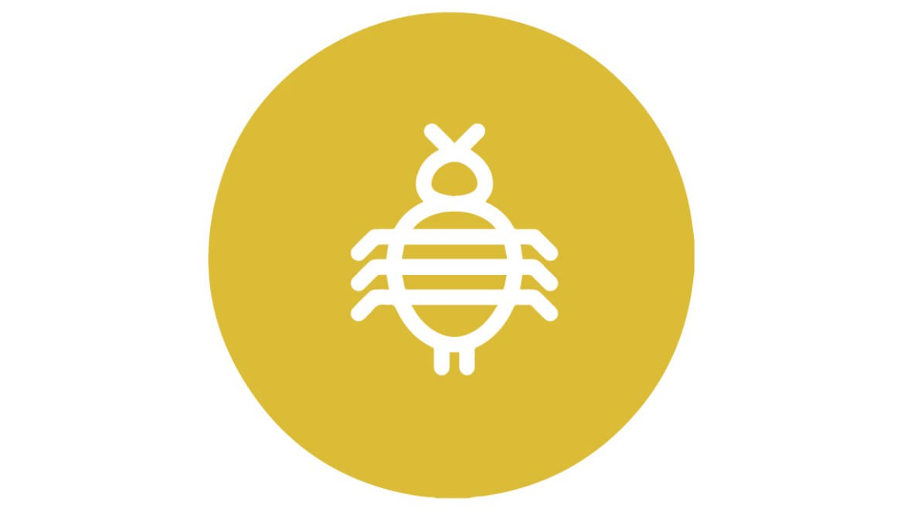

MUĞLA DELTA İLAÇLAMA
Pireler
Muğla Delta İlaçlama

Pireler
Pire , Siphonaptera takımını oluşturan kanatsız, küçük, kan emici 1.600 dolayında böcek türüne verilen genel bir addır.
Tropik, astropik ve ılıman bölgelerden kutup bölgelerine kadar yayılmış olan bu böcekler özelleşmiş vücut yapıları sayesinde memelilerin ve kuşların derisine tutunarak kanlarını emer, konakları arasında yer değiştirirken son derece tehlikeli hastalıkları da bulaştırabilir. Vebanın insanlara bulaşmasında baş rolü oynayan keme piresi (Xenopsylla cheopis) ve akrabaları ortaçağda Avrupa nüfusunun yaklaşık dörtte birinin ölümünden sorumludur. Pireler dış parazitlerdir. Memelilerin ve kuşların kanlarını emerek yaşamlarını sürdürürler. Boyları 1,5 milimetreden 3,3 milimetreye kadar değişiklik gösterir. Hızlı hareket edebilen genelde koyu renkli canlılardır. Genellikle köpek, kedi, insan, tavşan ve kümes hayvanlarında bulunurlar ve ısırdıkları yerleri uyuşturmak için kullandıkları salgı kaşıntı yaratır. Alerjik reaksiyon gösterildiği takdirde deride kızarıklıklar oluşur. Taşıdıkları Yersinia pestis adlı (bakteri) insanlara bulaştığında ölümcül hıyarcıklı veba hastalığı meydana gelebilir. Özel tasarlanmış ayakları sayesinde şu ana dek evrende bilinen en hızlı ivmelenmeye sahip canlıdır. Yerden fırlatılan bir uzay roketinden yaklaşık 40 kat daha hızlıdır. Bu yüzden pireler ışınlanmış gibi anlık farklı yerlerde gözükür.
Kutup bölgelerine kadar yayılmış bu böcekler memelilerin ve kuşların derisine tutunarak kanlarını emer. 1,5-3,3 mm kadar boydadır. Bir yıl kadar yaşarlar.
Pirelerden korunmanın en etkili yolu temizlik ve güneş ışığıdır.
Tifüs, veba, tularemi ve bazı paraziter hastalık etmenlerini bulaştırırlar. Isırdığı yerde kaşıntı ve dermatit oluşur. Bazı pire cinsleri ise insan ve hayvan derisi altına girer, oraya gömülüp ürer, deriyi şişirir, deriyi kesip içindeki pire kesesini delmeden dikkatle çıkarmak gerekir. Kese delinirse akan sıvı şiddetli alerjik reaksiyona sebep olabilir. İnsan bağırsaklarında yaşayan bazı şerit türlerinin yayılmasında rol oynayarak Helmintosis dimli hastalığına sebep olur. Ayrıca bazı virüs hastalıklarının taşınmasında rol oynar.
Bizimle iletişime geçin